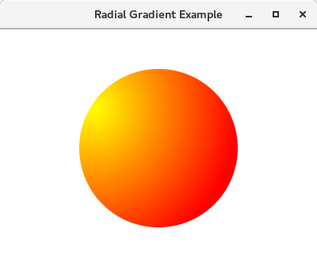

En JavaFX tenim la flexibilitat de crear el nostre propi color usant diversos mètodes i passar-ho com un objecte Paint al mètode setFill(). Analitzem els diversos mètodes per a crear color en JavaFX.
El sistema de color RGB és el mètode més popular per a crear un color en gràfics. Consta de tres components denominats ROIG → R, VERD → G i BLAU → B. Cada component usa 8 bits, la qual cosa significa que cada component pot tindre un valor sencer de 0 a 22 ^ 8 - 1 = 255.
La pantalla de la computadora pot veure’s com una col·lecció de píxels. El conjunt (R, G, B) representa en realitat l’emissió dels seus respectius LED en la pantalla.
Si el valor de ROIG s’estableix en 0, significa que el LED roig està apagat mentre que el valor 255 indica que l’emissió completa del LED és allí. La combinació de (0,0,0) representa el color negre mentre que (255,255,255) representa el color blanc. Els valors mitjans en aqueix rang poden representar diferents colors.
Usant la superposició de RGB, podem representar 255 * 255 * 255 colors diferents. En JavaFX, la classe javafx.scene.paint.Color representa colors.
Hi ha un mètode estàtic anomenat rgb() de la classe Color. Accepta tres arguments sencers com a roig, verd, blau i un argument doble opcional anomenat alfa. El valor d’alfa és proporcional a l’opacitat del color. El valor alfa 0 significa que el color és completament transparent, mentre que el valor 1 significa que el color és completament opac.
En JavaFX, també podem crear el color pel nom del color. La classe javafx.scene.paint.Color conté tots els colors com a propietats de la classe. La propietat Color ha de passar-se, com l’objecte de la classe Paint.
Juntament amb els diversos mètodes que hem vist fins ara, JavaFX també ens permet crear el color usant HSB que és la combinació de To, Saturació i Lluentor. javafx.scene.paint.Color conté un mètode estàtic Color.hsb() que accepta tres nombres enters h, s y b.
La classe javafx.scene.paint.color ens permet crear els colors web usant el mètode Color.web(). Això pot prendre fins a dos paràmetres, dels quals un és el valor hexadecimal del color i l’altre és un argument opcional anomenat canal alfa que representa l’opacitat del color.
Color.web("# 0000FF") // Color blau amb alfa implícit
Color.web ("# 0000FF", 1) // Color blau amb alfa explícit
Alpha és un valor de tipus doble que pot contindre valors en el rang de 0.0 a 1.0.
En gràfics per computadora, els colors de degradat (a vegades dits progressió de color) s’utilitzen per a especificar els colors dependents de la posició per a omplir una regió en particular. El valor del color degradat varia amb la posició. Els colors degradats produeixen les transicions de color suaus a la regió en variar el valor del color contínuament amb la posició.
JavaFX ens permet implementar dos tipus de transicions de color de degradat:
Per a aplicar patrons de degradat lineal a les formes, necessitem crear una instància de la classe LinearGradient. Aquesta classe conté diversos mètodes d’instància que es descriuen a continuació en la taula.
Metodes
Constructors
Per a aplicar degradat radial a les formes, necessitem instanciar la classe javafx.scene.paint.RadialGradient. Aquesta classe conté diversos mètodes d’instància descrits a continuació:
Metodes
Constructor
El constructor de la classe accepta alguns paràmetres.
RadialGradient(double focusAngle, double focusDistance, double centerX, double centerY, double radius, boolean proportional, CycleMethod cycleMethod, Stops? stops)
